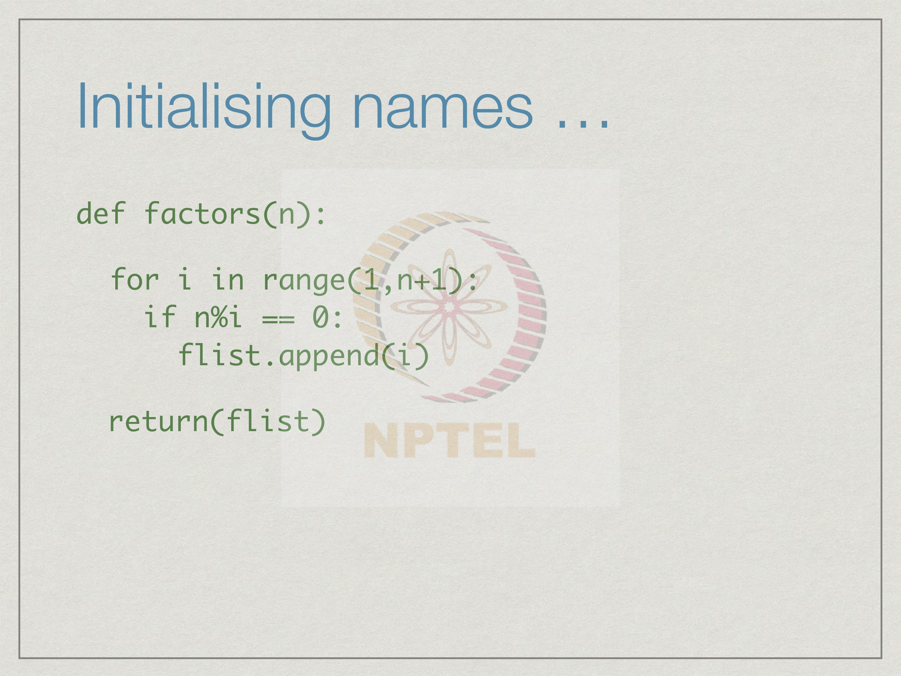
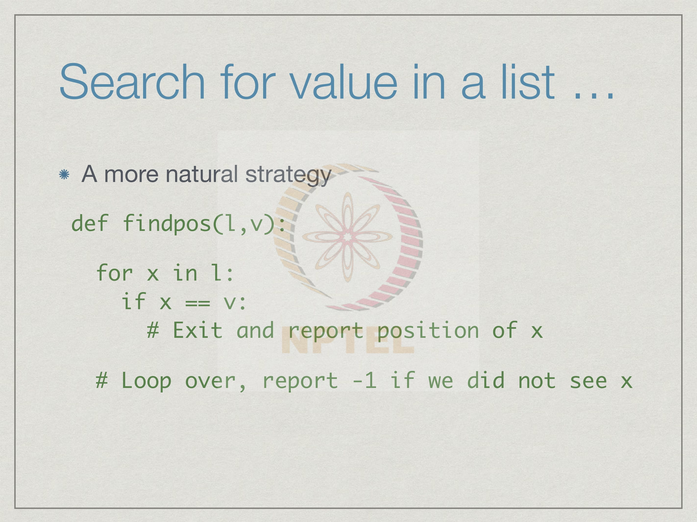
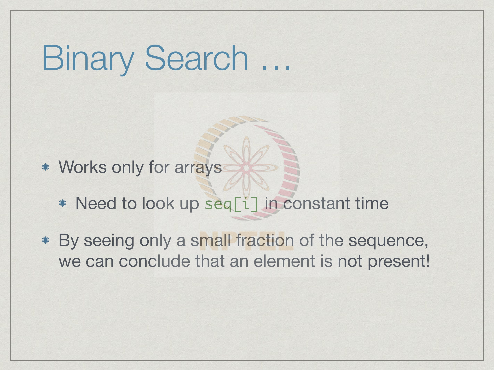
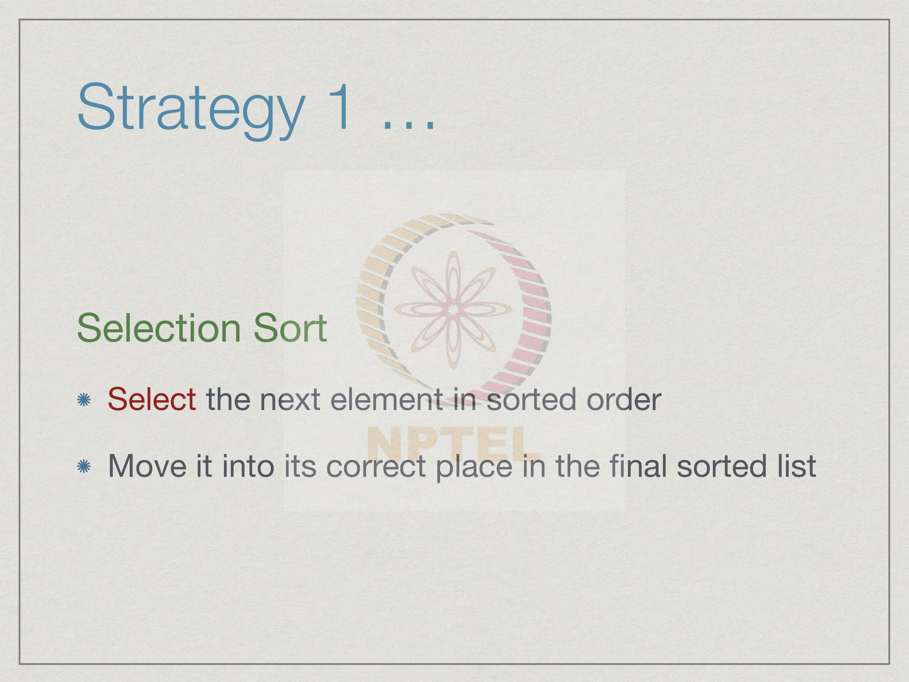
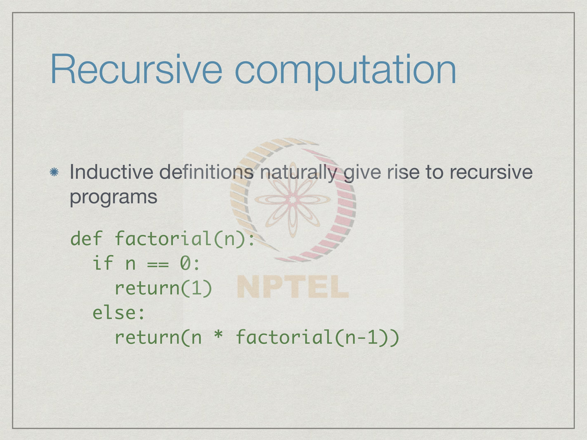
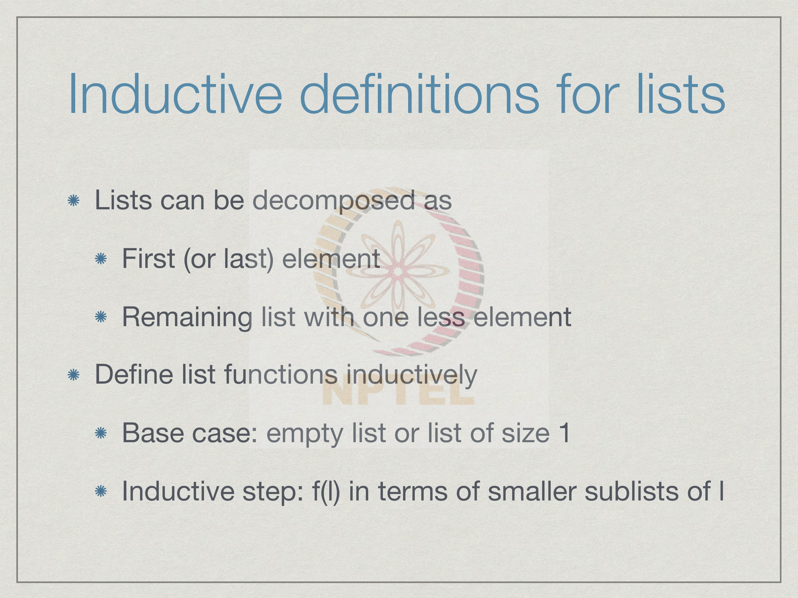
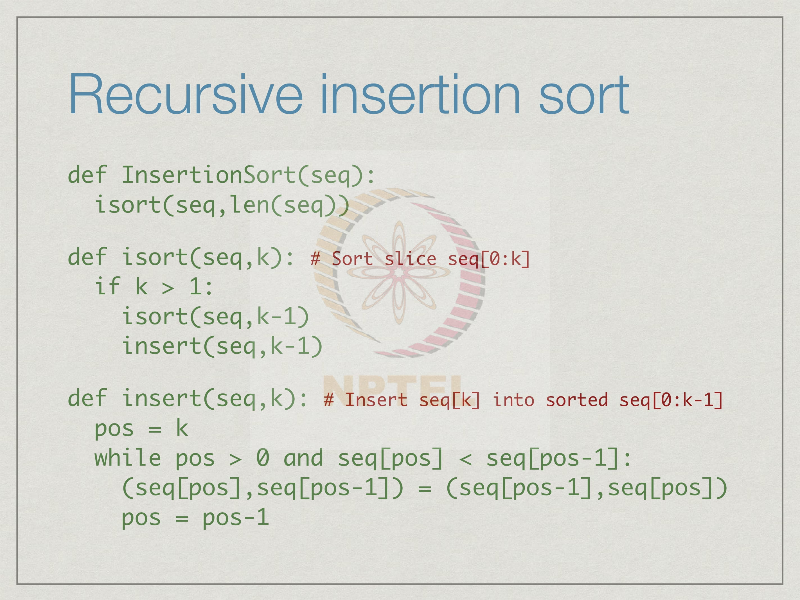

Week 3
3.1 More on range()
We have seen the range function which produces a sequence of values. In general, if we
write range i comma j, we get the sequence i, i plus 1 up to j minus 1.
Quite often we want to start with 0. So, if we will give only one argument if we just write
range j, this is seen as the upper bound and the lower bound is 0. This is like a slice,
where if you do not write the first argument of the slice, if we write for instance l colon n
then it will run from 0 to n minus 1. In the same way if we just write range j,
automatically we will get 0, 1 up to j minus 1.
Often we may want to generate a sequence where we skip by a value other than 1. We
want a kind of arithmetic progression if you are familiar with that. So, we want i, i plus
k, i plus 2 k and so on, we do this by giving a third argument. The third argument if we
give it to range tells the range function to skip every k item. So, we have i then we go
directly to i plus k. So, implicitly if we do not say anything it is like we put a 1 here
right. So, the default value is 1 i, i plus 1 and so on.
Now, how far does this go? Well, we want to go until we reach normally j minus 1. In
general, we do not want to cross j. So, what we will do is we will get i plus n k for the
largest n such that i plus n k is smaller than j, but if i go one more step, if i go to i plus n
plus 1 times k then i will cross j right. So, if we have a step then we will keep going until
we cross j and we will stop at the last value that is before j.
Having a step also allows us to count down. All we have to do is make the step negative.
So, if we say i comma j comma minus 1 then provided we start with the value which is
bigger than the final value, we will start with i produce, i minus 1, i minus 2 and so on
and we will stop with j plus 1.
The general rule for the range function is that you start with i and you increment or
decrement if k is negative, in steps of k such that you keep going as far as possible
without crossing j. In particular, what this means is that if you are going forward, if you
are crossing, if you have positive, if your increment is positive then if you start with the
value which is too large then you will generate the empty sequence because you cannot
even generate i because i itself is bigger than j or equal to j then that would not be
allowed.
Conversely in the negative direction what happens is that if we start with the value which
is smaller than the target value, we are already below j and so we cannot proceed, we get
an empty sequence. This idea about not crossing j it is not same as saying stops smaller
than j because if you are going in the negative direction you want to stop at a value larger
than j. So, you can think of it as before and before means different things depending on
whether you are going forwards or backwards.
Just to see an example, suppose we want to have a range which starts from 12 and whose
limit is 1, but the increment is minus 3. So, we will start with 12 and then we will go to
9, then we will go to 6, then we will go to 3 and if we were to go one more step you
would go to 0, but since 0 crosses 1 in the negative direction we would stop at 3 itself,
we would not cross over to 0.
It is often confusing to new programmers that range i comma j is actually from i to j minus 1 and not to j itself. So, there is no real reason why it should be this way, it is just a convenience and the main convenience is that this makes it easier to process lists. Remember that if we have a list of length n, the positions in the list are numbered 0, 1 up to n minus 1. So, very often what we want to do is range over the indices from 0 to n minus 1 and if we do not know n in advance, we get it using the length function. We would like to range from 0 to the length of the list. If the range is defined as it is now, where the actual value stops one less than the upper limit then range 0 comma length of l will produce the current range of valid indices. If on the other hand it did, what we would perhaps think is more natural and it will do i, i plus 1 up to j, if this were the case then every time when we wanted to actually range over the list positions, we would have to go from 0 to length of l minus 1. So, we have to awkwardly say minus 1 every time just to remind ourselves that the position stops one short. It mainly for this convenience that we can freely use the length of the list as the upper bound that the list stops, that the range stops at j minus 1. As I said this is not, I mean, required you could easily define a range function which does the natural thing which is i, i plus 1 up to j, but then you have to keep remembering to put a minus 1 whenever you want the indices to stop with the correct place.

A range is a sequence and it is tempting to think of range as a list. We saw that for comes in 2 flavors, we can either say for i in a list or we can say for i in range something. So, range 0 to 10 generates a sequence 0, 1 up to 9. So, is this the same as saying for i in the list 0, 1, 2, 3, 4 up to 9. In other words, if we ask Python the following comparison, is range 0 comma 10 equal to the list 0, 1, 2, 3 up to 9 then the question is the result of this comparison true or false. Here, we encounter a difference between Python 2 and Python 3. In Python 2, the output of range is in fact, the list. So, if you run this equality check, in Python 2 the answer would be true, but for us in Python 3 range is not a list. So, range produces something which is a sequence of values which can be used in context like a 'for', but technically the range is not a list, we cannot manipulate the output of range the way we manipulate the list.
Now, it is possible to use range to generate a list using the function list. So, name of the
function is actually list. What we do, for example, is give the range as an argument of
list. So, the sequence produced by a range will be converted to a list. If I want the list 0
to 4, I can say give me the range 0 up to 5. Remember, the range was stopped at 4
because 5 is the upper bound and this sequence will be converted to a list by the function
list.
This is an example of a type conversion; we are converting the sequence generated by a
range, if we said is not a list into a list by saying, make it a list. So, the function list takes
something and makes it a list if it is possible to make it a list. If it is something which
does not make sense it will not give you a valid value, now this is a general feature. So,
we can use the names that Python internally uses for types also as functions to convert
one type to another, for example, if we have the number 78 and we want to think of it as
a string then the function str will take its argument and convert it to a string. So, str will
take any value and convert it to a string representing that value.
This happens implicitly for instance as we will see when we want to display a value
using a print function. So, what print will do is take a value, convert it to a string and
only strings can actually be displayed, because strings are texts what we see on the
screen or when we print out something is text. So, str is implicitly used very often.
Sometimes we want to do the reverse we want to take a string and convert it to a value.
So, for instance if the string consists only of digits then we should get a value
corresponding to that string. If we give it the string 321 then it should give us back the
integer 321. So, the value, remember the name of the function is the same as the name of
the type to which you want the conversion to be done. So, we want to take a string and
make it into an int, we use the name int.
Now, in all these things the function will not produce a valid value if it cannot do so. If I
give the function int a string which does not represent the number then it will just give
me an error. So, long as a type conversion is possible it will do it, if it does not it returns
an error. We will see later on that actually the fact that you get an error is not a disaster
there are ways within Python to recover from an error or to check what error it is and
proceed accordingly.
To summarize what we have seen is that our simple notion of range from i to j has some variants. In particular, if we do not give it a starting point we just give it one value it is interpreted as an upper bound. So, range n is a short way of writing 0, 1, 2 up to n minus 1. Also we can use the third argument which is a step in order to produce sequences which proceed in steps i, i plus k, i plus 2 k and so on. In particular, if k is a negative step then we can produce decreasing sequences, and the last thing to remember is though range produces a sequence which can be used exactly like a list in things like for, in Python 3 a range is not a list. If we want to get a list from a range output we must use this type conversion called list. In general, we can use type names to convert from one type to another type, provided the value we are converting is compatible with the type we are trying to convert to.
3.2 Manipulating lists
So lets take a closer look at lists now. We said that lists are mutable objects. So, if we
have a list called list1 whose values are [1, 3, 5, 6], and then we assigned list1 to the list
named list2 then we said both list1 and list2 in this case because lists are mutable will be
pointing to the same list [1, 3, 5, 6]. Now if I take the position 2 which is this position
and replace it by the value 7 then clearly list1 is [1, 3, 7, 6], but because list2 and list1
were pointing to the same object we have that list2 also has the same value [1, 3, 7, 6].
On the other hand, if we made this change in a more roundabout way. So what we did
was, we took this list and then we first took its slice 1, 3 from 0 up to position 1 not 2 so
I get 1, 3. Then I insert a 7, and then I take from position 3 on wards which is 6. then I
also get [1, 3, 7, 6] in list1. But on the other hand because I used plus, what I have done
is I have created a new list and therefore list2 has not changed, in this case list2 remains
[1, 3, 5, 6]; in other words, concatenation using plus results in producing a new list.
Let us check this in the python interpreter. So, if I say list1 in to 1, 3, 5, 6 for example,
and I say list2 is equal to list1 and then I just change the position 2 of list1 then list1 and
list2 are 1, 3, 7, 6. On the other hand if I say list1 is equal to 1, 3, 5, 6 as before and list2
is equal to list1 and now I change list1 in this slice plus concatenation way, so if I say
take the first two positions then put a 7 and then take the rest of list1. Now, list1 is again
1, 3, 7, 6, but list2 which was pointing to list1 is no longer pointing to list1 because the
plus has created a new list and so the new list is not the same as your old list, so list2
continues to point at the old list so it is 1, 3, 5, 6.
This is an important point that one has to keep in mind regarding mutability. If we start
reassigning a list using plus we get a new list, this also applies when we do it inside a
function. If inside a function we want to update a function list then so long as we do not
reassign it we are OK, but if we put a reassignment using plus then the list that has been
updated inside the function will not reflect outside the function. So, we always have to be
very careful about this.
Now, how would be go about extending a list? Suppose, we want to stick a new value 22 at the end of a list; one way to do this is to say l is l plus 22. But as we saw, this plus operator will create a new list, so if you wanted to append a value to a list and maintain the same list so that for instance if it is inside the function we do not lose the connection between the argument and the value will being manipulated inside the function this would not do. We saw this function append in passing when we did gcd in the very first week. Append is a function which will take a list and add a value to it. So here we have said list1 is 1, 3, 5, 6 as in the previous examples. List2 is list1 and now we have said take list1 and append 12. So, list1 the way we have write it is list1 dot append and in append we give the argument the new value to be appended. So what this does is, of course it will make list1 now a five element list with the original 1, 3, 5, 6 and a new value 12 at the end, but importantly this is the old list1 it is not a new list in that sense. So, list2 has also changed. Append actually adds a value in place both list1 and list2 point to be new list with 12 at the end.
On the other hand, if we had done it like I mentioned using the plus operator then we would find that list1 changes, but list2 does not because as we saw before concatenation produces a new list. So, append is a function which extends a list with a new value without changing it.
So, append takes a single value. Now, what if we wanted to append not a single value,
but a list of values; we wanted to actually take a list and expand it by adding a list at the
end, we had say 1, 3, 5 and we wanted to put 6, 8, 10. So, we want to take 1, 3, 5 and we
wanted to expand this to have three more values, of course we can append each of these
value one at a time. But there is a function which is provided which like append extends
a list, but here this must be a list itself.
So extend takes a list as an argument, append takes a value as an argument. So, list1
extend list2 is the equivalent of saying list1 is equal to list1 plus list2, but remember that
this must be a list it is not a single value it is not a sequence of value it is a list so it is
must be given in square brackets you must give 6, 8, 10 as an argument to the extend
function.
Now, this is to add elements to a list there is also a way to remove an element from a list.
So, this is one way to remove it by specifying the value. We are not looking at a
particular position we are looking for a value x and list1 removes the first occurrence of
x in the list. Now, you may ask what happens if there is no occurrence x in the list. Well,
in fact this will give us an error so you have to be careful to use remove only if you know
that there is at least one copy of x and remember it only removes the very first
occurrence, doesnot remove all the occurrences. So, if there are ten occurrences of x in
list1 only the very first one will be removed.
Let us explore these things. Let us start say with list1, so remember from the previous
lecture we said we can take range and produce a list. Now if I do this I have list1 is 0, 1,
2 to 9, now if I say list1 dot append 12, then list1 is appended with 12. Now if I say list1
dot extend say 13, 14, then list1 now has 13, 14 appearing. So this is how append and
extend work. Now supposing, just for the sake of argument I take list2 and I make two
copies of list1. Now, list2 goes from 0 to 14 with a gap of course in between at 10 and
11, again from 0 to 14.
Now if I say list2 dot remove say 5, now there are two copies of 5 remember the first
copy which is here in the beginning and second copy which is later, so this will remove
the first copy. Now, if I look at list2 the first one skip at 4 to 6, but the second copy is
still there. If I say it again then both copies have gone, because I do not have this 4, 6 and
I also do not have a 5 here again its 4, 6. Now what happens if I have remove it a third
time, now I get an error saying x is not in the list.
Remember that remove works only if x is in the list, if it is not in the list you get an error.
Now it is important we will see later that we get an error it also has a name, so it says a
value error. This will be useful because later on we will find that within Python we can
actually examine errors and take alternative action if an error occurs and we can signal
what type of error it is by looking at the value that the error returns.
The append function looks a little bit different from the other functions we have seen so far. We would normally expect the function append to take two arguments; the list and the value to be appended. So we would think that the correct way or the natural way to write append would be to say append to list1 the value x. On the other hand what we have is this funny notation it takes says to list1 apply the function append with value x. In a Python terminology list1 is an object and append is a function to update the object and x is supposed to be an argument to the function append. In such a situation we have an object and we then apply a function to it, so we use three functions attached to the object by using the dot notation rather than passing the object to the function which is a more normal way in which you think of functions. We will come back to this point later on and may be two - three weeks from now and we look at what is called Object Oriented Programming within Python.
There is another way to expand and contract lists and place, this is by directly assigning
new values to a slice. So, we go back to our old example: list1 is 1, 3, 5, 6 and list2 is
list1. Now what we are saying is that take the slice from position 2 on wards and assign it
the value 7, 8. So remember the positions are 0, 1, 2, 3. So what this is saying is, take this
slice namely 5, 6 and replace it by 7, 8. What we get is that, of course list1 is the slice 5,
6 is replaced by 7, 8, but this slice replacement happens in place.
It is a bit like assigning a new value at a given position. If I say list 2 is equal to 7 we
said that position two becomes 7. In the same way if I say that list1 from slice two to the
end become 7, 8 it changes 5, 6 to 7, 8 both in list1, but it also does not change where it
is pointing to, so list2 also get affected. So both of them now say 1, 3, 7, 8.
Now, here we had a slice of length two and we replaced it by a new list of length two.
So, we preserved the structure of the list in terms of the number of positions. This is not
required, Python allows you to both expand and shrink a slice. For instance, you could
have taken that list, now let us say we have this is 1, 3, 7, 8 and again we want to take
slice 2 onwards which has two positions and we can say replace it by a list with three
values. We are saying take this list take the slice from 2 to 3, the last two positions and
replace it with three values and what we get is the old 1, 3 and this slice has now become
9, 10, 11. So, we had a four element list become a five element list. This is the one way
to expand a list in place using a slice.
The other thing we can do is shrink a list; we can put a smaller thing. Supposing, we
want the list to have just one value in the position 0 on 1, so we take the slice 0 to 2
which will give us these two positions so now you have a slice of length two, but we
assign it a list of length one. So, this 1, 3 is replaced by just the single 7. Now we had a
list of length five after the previous expansions which has now become a list of length
four after this contraction.
With slices you can replace a slice in place, this can produce a bigger list or a smaller list
depending on what you put in, but as you can imagine this can be very confusing. So,
you should be very careful that you know what you are doing if you are trying to directly
updates slices in the list.
One of the very common things that we want to know about a list is whether a value exists in a list. So, Python has a very simple expression called x in l. So, x in l returns true if the value x is found in the list l. Now we can use this for instance to make our remove a safe operation; before we invoke l dot remove x we first check that x actually is in l. So, if x is in l then the condition will be true and only then will we try to remove it, if x is not in l then we would not remove x. In this case we are guaranteed that l dot remove will not be called in an error prone context where it will say there is no x in l. Also recall that remove removes only the first element. We can replace this if by a while and say that so long as there is a value x in l keep applying remove. This will in one short remove all the x’s in l because every time we remove an x we go back and check if there is still an x in l if there are still on x in l we remove it, so from left to right this loop will remove all the x’s in l.
Now there are a host of other functions defined for list, for instance l dot reverse will
reverse a list in place, l dot sort will sort a list in ascending order. You can also sort it in
other orders you can look up and see how to do that. If we only want to know whether an
element is in l we say x in l, but if we want to know where it occurs then we use index it
will find the leftmost position, but again it will give us an error if there is no x in the list,
so we should first check if x in l and then find the index of the leftmost position.
Now you might want not the leftmost or the rightmost position so there is an r index and
there is a host of other functions and you must look up the Python documentation there is
no way that this course or any course can cover every function which is defined in
Python for every type.
So you do have to look up the documentation and if you think that there should be a
function that which does something natural very often there will be. So, try and look it
up and see for yourself how it works and try to use it. If you have a question like what
happens if I do this well Python is an interactive language. What happens if I do this?
Just try it out and see and try to figure out from what you see in the interpreter, how the
function works, in case there seems to be some ambiguity in the documentation. But
above all do not be afraid to see in documentation only by looking up a documentation
will you be able to learn the functions that you need because it is very difficult as I said
to say up front every possible function that is there.
Final point regarding list is something we talked about in passing, which is that since names do not have types in Python, we do not have to announce the name, names just pop up as the code progresses. So every time a name pops us Python needs to know what value it is. Typically the first time we use a name we have to put it as part of an assignment, we have to assign a value to it and that value has to be something which is computable given the current names. So if we want to assign for instance to the name y the expression x plus 1, at this point implicitly x must have a value, otherwise the x plus 1 cannot be evaluated. So, if x has not been seen before and for the first time in my code I see it on the right hand side of an assignment it means that I am expected to produce a value for x but no value has been assigned so far and this will give you an error. This is quite easy to spot, so when you write something and you see something on the right hand side and you have not seen it before then it means a Python will flag an error and it is not very difficult to understand why this is so. Now the kind of list functions we saw now, it is bit more subtle. When I say l dot append v there is no equal to sign. So it is not immediately obvious that l dot append v requires l to already be having a list value, why cannot I just append v for example to an empty list. Well, of course I can append v to an empty list how does Python know that l is in empty list. So, python needs to know that l is a list, before it can apply this append function.
So, we saw this small function earlier which computes factors of n. So essentially what it does is, it takes all numbers in the range 1 to n. I take 1 to n plus 1 so that I run through the sequence 1 to n. And if a number divides n evenly if there is no remainder I have used the append function now to append i to the list of factors which I will return. Now, the catch with this is that when I come for first time to this statement the first factor which will be 1 of course because 1 will have always be a factor.
Python will have to ask why flist has the ability to append a value, because flist has never been encountered to this point. We were careful when we wrote the code, of course we used plus because we did not use append in that code but it is the same thing. We have to be careful to insert this initialization. This initialization is only needed to tell Python when this first append happens that it is indeed the case that flist is of type list and therefore the append function is a valid function to apply to this name, without this you will get an error. Just remember that you always have to make sure that every name that you use is initialized to a value the first time, so that whenever it appears later on, the value is clear and therefore what operations are allowed for this name are also clear to Python.
To summarize, what we saw is that we can extend lists in place using functions like
append, extend and so on. We can also assign a new value in place to a slice of a list and
in the process expand or contract the list, but this is something to be done with care; you
must make sure you know what you are doing. There are several built in functions on
list; we will see some of them as we go along and use them and describe them as we see
them, but it is impossible to document all of them and to go through all of them and it is
also a very boring to just list out of a bunch of functions.
So, do look up the tutorial and other documentation which is available which I
mentioned in the earlier weeks, so that you can find out what kind of functions are
available. And finally, do not forget that you must assign a value to a name before it is
first used otherwise, because names do not themselves have types, Python will not know
what to do with the given name.
3.3 Breaking out of a loop
Let us revisit Loops. So, we saw that we have two types of loops in Python. The first is a 'for loop' where the value ranges over a list in general or say the output of the range sequence; so for i in l will repeat the body for each item in the list l. Sometimes we do not know how many times we need to repeat in advance, so then we use the while forms. While takes a condition and it keeps repeating the body until the condition becomes false. But the main thing to notice in both these cases is that how long will the loop takes is determined in advance either we have a fixed number of iterations depending on number of values in l for a for loop or we keep going until the condition becomes false we cannot stop before that. Now it does turn out the sometimes we have natural situations where we want to cut short the loop and not proceed till the very end.
Suppose, we want to write a function findpos which finds the first position of a value v
in the list 1. We had seen that there is a built in function called index which pretty much
does this, so l dot index v will report the first position where v occurs in the list l.
However, the index function will report an error if there is no occurrence of v in l. So, we
want to change that slightly and what we want to say is that if there is no v in l report
minus 1. So either we get a value between 0 to n minus 1, where n is the length of the list
or we get the value minus 1 saying that v is not in the list. Here is a while loop
implementation. We use a name found as the name suggest to indicate whether the value
have been found or not as we have been seeing so far. Initially we have not seen any
values in l, so v is, the found - is false. And we use i as a name to go through the
positions, so i is initially 0 and we will increment i until we hit the length of l.
So, so long as, while i is less than the length of the l, if we see the value we are looking
for then we update found to be true and we mark the position that we have found it to be
pos. At the end of this, if we have not found the value, so the value found is not been set
to true that means there was no v in the list then we will set pos to minus 1 which is the
default value we indicate at beginning. Then we return the current value of pos which is
either the value of pos we found or the value will set to minus 1 because we did not find
it.
There are two points to observe about this; the first point which is the main issue at hand
is that we are going to necessarily go through every position i from 0 to the length of l
minus 1 regardless of where we find it. Supposing, we had several hundreds of thousands
of elements in our list and we found the value at the very second position we are still
going to scan the remaining hundreds of thousands of positions before we return the
position two. Now this seems very unnecessary.
The other point, which is an issue of correctness, this is an issue of efficiency that we are
running this loop too many times unnecessarily. In case we are actually able to report the
first value quite early. The other problem which is correctness is that we want to report
the first position, but the way we have written it every time we continue pass the first
position and we find another copy of v we are updating the position to be the new thing.
So, we are actually finding not the first position but the last position so this is not a very
good way to do this. So, we first change that. So we say that we want the first position.
So, we want the first position we want this update to happen only if we have not found
the value so far We had this extra condition which says that if l i is v and we have not
founded so far then we update found to true and we said pos to i.
This ensures that pos is updated to i only the very first time we see v after that the value
found prevents us from doing this update again. So, at least we are correctly finding the
first value of the position. And finally as before if we never find it then the value found is
never set to true and so we report minus 1. Now the issue is why we have to wastefully
go through the entire list even though after we find the very first position of v in l we can
safely return and report that position.
So, a more natural strategy suggests the following; we scan the list and we stop the scan as soon as we find the value. So, whenever we find the value for the first time we report that position and we get out. Of course, the scan may not find the value, so if the scan completes without succeeding then we will report minus 1.
We could think of doing this using a 'for loop'. So, we go through every value in l using a variable x. So, x is the name which goes through the first element, second element, these are not positions now these are the actual values. We check whether the value x that we currently pick up in the list is indeed the value v we are looking for, if so we exit and we report the position of this x. If we come to the end of the loop and we have not seen x so far like before we want to report minus 1.
Here is a first attempt at doing it, so let us go through it systematically. First of all we have this loop, so for each x in the list if x is v then we report the position. Now we have to find the position because we are going through the values so this has forced us to use a name i to record the position and we have to manually do this. So, like in the while loop we start with the position 0 and then every iteration we increment the position. This is only the first version of this we will see how to fix this. So, we have to separately keep track while we are doing this for, kept, separately keep track of the positions and report it. But what is new and this is a main issue to be highlighted here is this statement called break. So what break does is it exits the loop. So this is precisely what we wanted to do if x is v we have found the first position we do not want to continue we just want to break, if not we will go increment the position and go back. Now, how do we record at the end we do not have this found variable anymore. How do we know at the end whether or not we actually saw it? So, the question is was pos set to i or was it not set to i. Well, the default value is minus 1. Supposing, pos is not reset we want to report minus 1. So, this is why in our function we have actually initially set pos to be minus 1. So, the default value is that we do not expect to find. It is like saying found is false. So, by default the position is minus 1. At the end of this loop if you have not found it pos has not been reset so it remains minus 1. On the other hand if we have found it without looking at all the remaining elements we have set it to the first position we found it and we have taken a break statement to get out of the loop so we do not unnecessarily scan. When we come here either way we have either report it to first position we have found it or in the worst case we have scanned through the entire list, and we have not found it in which case the initial value minus 1 is there. So, in any case we can return pos and we have no problem This is just to illustrate the use of the word break, which allows us in certain situations to get out. Now remember in the worst case we do not find x in it. So, the worst case behavior of this loop is no different from the situation without the break we have to go through the entire list and we have to come out only when we have scanned everything, but if we do find it we can avoid some unnecessary computations.
We can simplify this a little bit by first removing this i instead of scanning x actually it is
better to scan the positions. So, it is better to say pos is minus 1, but instead of going
through x in l it is better to go through i in the range 0. Remember now this is implicitly
0 to the length of l minus 1. So, we go for i in the range 0 to length of l, so if we do not
give a 0 it will give only a one argument this is taken as the upper bound. This will go
through all the positions. And instead of checking x we check l at position i, so if l a
position i is v then we set the position to this current value and we break. So, by
changing the variable that we put in the 'for', we have got a slightly more natural
function.
And again, we have this clever trick which says that since we set pos initially to minus 1
if we did not reset it here if no value in the range 0 to n minus 1 produced a list value
which is equal to the value we are looking for we will return minus 1 as before. This
requires this clever trick. So the question is what if we do not have a situation where
such a clever trick is possible or if we do not think of this clever trick how would we
know at this point. So remember now there are two situations either we break, so if we
break that means that the value is found, or if we do not break, if we terminate normally,
if the loop ends by going through all the things then v is not found.
Remember even if v is found at very last position we will first break, we will not go back
and say that the loop ended. So, if we see v at any position from beginning to end we will
execute the break statement if not we will not. The question is can we detect whether or
not we broke out this loop or whether we terminate it separately.
Python is one of the few languages which actually provide way to do this. So it allows
something that looks a bit odd because of the name it allows something called else which
we saw with if, it allows an else for a loop as well. The idea is that else this part will be
executed if there is no break if the loop terminated normally, so do not worry about the
fact that else does not mean this in English so it is just a way of economizing or the
number of new words you need to use. If you see an else attached to a 'for' it could also
be attach to a 'while' it means that the 'while' or the 'for' terminated in the natural way
either for iterated through every value that it was supposed to iterate through or the while
condition became false. On the other hand aborted by a break statement then the else will
not be executed.
Here for instance, now we do not initialize. We no longer have this clever trick, we do
not have this anymore. So what we say is that for i this range we check and if it is there
we set the position to be the current i and then we break.
Now, if we have actually gone through the entire list and not found it pos is undefined. If
pos is undefined we need to define it before we return the value, so we have this else
statement. Now we say, we have come through this is whole thing and there will be no
break, there is no v in l because otherwise we would have done a break and otherwise
pos will be set to a valid value in the range 0 to n minus 1. So, there has been no break
there is no v in l. Let us say pos to minus 1 and then return it.
To summarize, it is very often useful to be able to break out of a loop prematurely. We
can do this for both for and while we can execute the break statement and get out of a
loop before its natural termination. And sometimes it is important to know why we
terminate it, we terminate it because the loop ended naturally or because we used the
break statement. This can be done by supplying the optional else. Both, for and while
also allow an else at the end, and the statement within else is executed only when loop
terminates normally.
3.4 Arrays vs lists, binary search
We have seen several situations where we want to store a Sequence of values. Now it turns out that in a program or in a programming language implementation, there are two basic ways in which we can store such a sequence. These are normally called Arrays and Lists. So, let us look at the difference between Arrays and Lists.
An array is usually a sequence which is stored as a single block in memory. So, you can
imagine if you wish that your memory is arranged in certain way and then you have an
array, so usually memories arranged in what are called Words. Word is one unit of what
you can store or retrieve from memory, and an array will usually be one continuous
block without any gaps.
And, in particular this would apply when an array has only a single type of value, so all
the elements in the sequence are either integers or floats or something where the length
of each element of the array is of a uniform size. We would also typically in an array no
in advance how big this block is. So we might know that it has say 100 entry, so we have
a sequence of size 100.
Now when this happens, what happens is that if you want to look at the jth element of a
sequence or the ith element of a sequence, then what you want to think of is this block of
memory starting with 1, 2, 3, up to i right and you want to get to the ith element quickly.
But since everything is of a uniform size and you know where this starts, we know where
the sequence starts you can just compute i times this size of one unit and quickly go and
one shot to the location in the memory where the ith element is saved.
So, accessing the ith element of an array just requires arithmetic computation of the
address by starting with the initial point of the array and then walking forward i units to
the ith position. And this can be done in what we could call Constant time. By constant
time what we mean is it does not really depend on i. It is no easier or no difficult to get
the last element of an array as it is to get to the second element of an array, it is
independent of i. It takes the fixed amount of time to get to sequence of y for any i.
Now, one consequence of this is inserting or contracting arrays is expensive, because
now if i have an array with 0 to 99 and I want to add a new value here say at position i
then first of all this array now becomes from 0 to 100 and now everything which is after i
has to be shifted to accommodate space if we want to keep the same representation with
the entire array is stored as a single block. So, when we have a single block of memory
though it is efficient to get to any part of it quickly it is not very efficient to expand it
because we have to then shift everything. The worst case for example, if this green block
comes into 0th position then the entire array has to be shifted down by one position.
In the same way contraction is also expensive because we have to make a hole in some
sense. If we remove this element out then we have a hole here and then we have to push
everything up to block this hole, because – remember the array must have all elements
contiguous that is without any gaps starting from the initial position.

The other way of storing a sequence, is to store it one element at a time and not bother
about how these elements are with respect to each other in the memory. I can think of
this memory as a large space and now I might have one element here, so this is my first
element and then I will have a way of saying that from here the next element is
somewhere else, this is what we call a Link. So very often in the implementation these
are called linked list, so I may have the first element here. Now because of various
reasons I might end up putting the second element here and so on.
You can imagine that if you have some say space in your cupboard and then you take out
things and then you put things back but you put things back in the first place where you
have an empty slot, then the sequence in which you put thinks back may not respect the
sequence in which they appear finally in the shelf. So, here in the same way we do not
have any physical assumption about how these elements are stored, we just have a
logical link from the first element to the next element and so on.
The other part of this is that we do not have to worry about the overall length of the list
because we know we started at the 0th position and we keep walking down. On the last
position so say suppose the last position is in fact two then there would be some
indication here saying that there is no next element, so two is the last element. A list can
have a flexible size and obviously because we are just pointing one element to another,
we can also accommodate what we see in Python where each element of the list maybe
of a different type and hence each value might have a different size in itself. It is not
important unlike an array that all the values have exactly the same size because we want
to compute how many values to skip to get to the ith element. Here, we are not skipping
we are just walking down these links.
Since we have to follow these links the only way to find out where the ith element is is to
start from the 0th element and then go to the first element then go to the second element
and so on, because a priori we have no idea where the ith element is. So, after i steps we
will reach the ith element. And if we have a larger value of i it takes longer to get there.
So accessing the ith position in a sequence when the sequence is stored as a list takes
time proportional to i, we cannot assume that we can reach any position in the list in
constant time unlike in an array.
On the other hand it is relatively easy to either insert or delete an element in a list like
this. Supposing, we have a list like this. Suppose, we start at 0th position and may come
to the ith position and currently if we say that the ith position points to the i plus 1th
position which point to the rest, and suppose we want to insert something here, then it is
quite simple we just say that this is the new i plus 1th position. We create a new block in
memory to store this value and then we will make this point here. So, it is like plumbing,
we remove one pipe and we attach a pipe from the ith element to the new element and
attach another pipe to the new element to what was beyond the ith element previously.
We just have to shift these three links around and this does not matter wherever we have
to do it, any place in the list if we have, I have just have to make this local change in
these links. And so this insertion becomes now a constant time operation if we already
are at the position where we want to make the change. In the same way if we want to
delete something that is also easy in fact it is even easier. So, I have say i pointing to i
plus 1 pointing to i plus 2 and I want to remove this element, well then I just make this
link directly point to the next one. Remember all these links are available to us we know
this link we know this link, so we know where i plus second element is.
Similarly here, when we want to create a new element we get a link for it because we
create it and we know what link to copy there because we already have it here. So we can
copy it from the ith element to the new element. Therefore, in a list it is expensive to get
to the ith element it takes time proportional to the position we are trying to get to,
however, having got to a position inserting or deleting an element at that position is of
constant time. Unlike in an array, where if we insert or delete at some position we have
to shift a lot of values forwards or back words and that takes time.
Let us look at
typical
Operations
that we
perform on
sequences. So
one typical
operation,
now if i just
represent a sequence more abstractly as sequences we have been drawing it. Supposing, I
want to exchange the values at i and j. This would take constant time in an array because
we know that we can get the value at ith position, get the value at the jth position in
constant time independent of i and j and then we exchange them it just involves coping
this there and the other one back.
On the other hand in a list I have to first walk down to the ith position and then walk
down to the jth position to get the two positions so I will have in a list I would have the
sequence of links and then I would have another sequence of links. Then having now
identified the block where the ith value is and the block where the jth values then i can of
cause exchange them without actually changing the structure I just copy the values back
and forth, but to find the ith and jth values it takes time proportional to i and j, so it takes
linear time.
On the other hand as we have already seen, if you want to delete the value at position i or
insert the value after position i this we can do efficiently in a list because we just have to
shift some links around, whereas in an array we have to do some shifting of a large
bunch of values before or after the thing and that requires us to take time proportional to
i.
The consequence of these differences between the two representations of a sequence as
an array and a list is that we have to be careful to think about how algorithms that we
want to design for sequences apply depending on how the sequence is actually
represented. An algorithm which works efficiently for a list may or may not work
efficiently for an array and vice versa. To illustrate this, let us look at something which
you are probably familiar with at least informally called Binary search.
The problem we are interested in is to find out whether a value v is present in a collection or we can even call it a sequence to be we more precise in a sequence which we call seq. So, we have a sequence of values we want to check whether a given value is there or not. For instance, we might be looking at the list of roll numbers of people who have been selected for a program you want to check whether our roll number is there or not. There are two questions that we want to ask; one is is it important whether the sequence is maintained as an array or as a list and is it also important given that it is maintained as an array or a list whether or not there is some additional information we know for example, it is useful for array to be sorted in ascending order that is all the elements go in strictly one sequence from beginning to end, lowest to highest, or highest to lowest, or does it matter, does it not matter at all.
Here is a very simple Python program to search for a value in a unsorted sequence. This
is a similar to what we saw before where we are looking for the position of the first
position of a value in a sequence, which is we not we do not even need the position we
only need true or false, is it there or is it not, it is a very simple thing. What we do is we
loop through all the elements in the sequence and check whether any element is the value
that we are looking for.
Once we have found it we can exit, so this exits the function with the value true. And if
we have succeeded in going through the entire list, but we have not exited with true that
means we have not found the thing, so we can unambiguously say after the for that we
have reached this point we have not found the value v that we are looking for and so we
should return false.
Since we are not looking for the position we have much simpler code if you go back and
see the code we wrote for findpos, so there we had first of all keep track of the position
and check the value at position i rather than the value itself. And secondly, when we
finish the loop we had to determine whether or not we had found it or we had not found
it, whether we had remember we use the break to get out of the loop for the first time we
found it.
We used to detect whether we broke or not, if we did not have a break then we had found
it, if we did not had a break we did not find it. Accordingly either the value of pause was
set or it was not set and if it is not set we should make it minus 1. So that was more
complicated, this is very simple.
The main point of this function is that we have no solution to search other than to scan from beginning to end. The only systematic way to find out v occurs in the sequence or not is to start at the beginning and go till the end and check every value, because we do not have any idea where this value might be. This will take time in general proportional to the length of the sequence. We are typically interested in how long this function would take in the worst case. So what is the worst case? Well, of cause one worst case is if we find the value at the end of the list. So, v is the last value then we have to look at all. But more generally v is not in the list. v is not in the list the only way we can determine the v is not in the list is to check every value and determine that that value is not found. And this property that we have to scan the entire sequence and therefore we have to take time proportional to the sequence to determine whether v is in the sequence or not it does not matter if the sequence is an array or a list, whether it is an array or a list we have to systematically go through every value the organization of the information does not matter. What matters is the fact that there is no additional structure to the information, the information is not sorted in any way at no point can we give up and say that since we have not seen it so far we are not going to see it later.
On the other hand, if we have a sorted sequence we have a procedure which would be at
least informally familiar with you. When we search for a word in a dictionary for
example, the dictionary is sorted by alphabetical order of words. If we are looking for a
word and if we open a page at random, supposing we are looking for the word monkey
and we open the dictionary at a page where the values or the word start with i, then we
know that m comes after i in the dictionary order of the English alphabet. So, we need to
only search in the second half of the dictionary after i, we do not have to look at any
word before i.
In general if we have a sequence that efficient way to search for this value is to first look
at the middle value, so we are looking for v, so we check what happens here. So, there
are three cases either we have found it in which ways which case we are good, if we have
not found it we compare the value we are looking for with what we see over there. If the
value we are looking for is smaller than the value we see over there, it must be in this
half.
On the other hand if the value we are looking for is bigger it must be in this half. So we
can halve the amount of space to search and we can be sure that the half we are not going
to look at positively does not have the value because we are assuming that this sequence
is sorted. This is called Binary search.
This is also for example what you do when you play game like twenty questions, if you
play that when somebody ask you to guess the name of a person they are thinking of then
you might first ask the question whether the person is female, if the person is female then
the persons and their answer is yes then you only need to think about women, if the
person says no then you only need to think about m, so we have men. So, you have half
number of people in your imagination we have to think about. At each point each
question then further splits into two groups depending on whether the answer is - yes or
no.

Here is some
Python code
for binary
search. So,
binary search
in general will
start with the
entire list and
then as we
said it look at the midpoint and decide on the left, so we will have to again perform
binary search on this. How would we do that? Again we will look at the midpoint of this
part then we are again look at say the midpoint of the next part that we look at and so on.
In general binary search is trying to do a binary search for a value in some segment of
the list. So we will demarcate that segment using l and r. So, we are looking for this slice
sequence starting with l and going to r minus 1, we are assuming that sequence is sorted
and we are looking for v there. First of all if the slice is empty, so this says the slice is
empty that is we have gone halving the thing and we have eventually run out of values to
look at. The last thing we look at was the slice of length 1 and we divided it into 2 and
we got a select of slice of length 0. Then we can say that we have not found it yet, so we
are not going to ever find it and we return false.
On the other hand if the slice is not empty, then what we do is we first compute the
midpoint. An easy way to compute the point is to use this integer division operation.
Supposing, we are have currently the slice from 4 to 7 then at the next point we will take
11 by 2 integer wise and we will go to 5. Remember 4, 5, 6, 7. We could either choose 6
or 7 then next to split it into two parts, because we are going to examine 6 and then look
at 4, 5 and 7 or look at 5 and then 4, 7. If we do integer division then we will pick the
smaller output. So, we find the midpoint. Now we check whether the value is the value at
that midpoint if so we return true, if it is not then we check whether the smaller, if so we
continue our search from the existing left point till the left of the midpoint.
Now we are using this Python, think that this is actually means this is a slice up to mid
and therefore it stops at mid minus 1. So, it will not again look at the value we just
examined. it will look at everything strictly to its left. If the value that we are looking for
is not the value with the midpoint and it is smaller than the midpoint, look to the left,
otherwise you look strictly to the right, you start at mid plus one and go up to the current
right line.
This is a recursive function. It will keep doing this at each point the interval will half, so
eventually supposing we have a slice of the form just one value, so 5 to 6 for example,
then at the next point right we will end up having to look at just a slice from 5 to 5 or 6 to
6 and this will give us a slice which is empty because we will find at the right point at the
left point are the same.
So, how long does the binary search algorithm take? The key point is that each step halves the interval that we are searching and if we have an empty interval we get an immediate answer. So, the usual way we do this is to record the time taken depending on the size of the sequence or the array or the list, so we have written array here, but it would be sequence in general. If the sequence has length 0 then it takes only one step because we just report that it is false we cannot find it if there are no elements left. Otherwise, we have to examine the midpoint, so that takes one abstract step you know computing the midpoint and checking whether the value is we will collapse at all into one abstract step. And then depending on the answer, remember we are computing worst case the answer in the worst case is when it is going to be found in the sequence. So, the worst case it will not be the midpoint we will have to look at half the sequence. We will have to again solve a binary search for a new list which is half the length of the old list, so the time taken for n elements is 1 plus the time taken for n by 2 elements.
We want an expression for T of n which satisfies, so this is what is called a recurrence normally. What function T of n would satisfy this? One way to do that is just keep substituting and see what happens. We start unwinding as itself, so, we have this by the same recurrence should be 1 plus T of n by 4, because I take this and halve it. So, T of n is 1 plus 1 plus T of n by 4. So, we start with 1 plus T of n by 2 and I expand this. Then I get 1 plus 1 plus T of n by 2 squared and in this case I will again get 1 plus 1 plus 1 by T of n by 2 cube. In general after k steps we will have 1 plus 1 plus 1 k plus 1 times or k times and t of n by 2 to the k. Now when do we stop? We stop when we actually get T of 0 or we can also say that for T of 1 it takes one step just we want to be careful. So, when this expression becomes 1 so when n is equal to 2 to the k. So, when is n equal to 2 to the k, this is precisely the definition of log right. How many times do I have to multiply 2 by itself, in order to get n and that is the value of k that we want. After log n steps this term will turn out to be 1. We will end up with roughly log n times 1 added up and so we will get log n steps. So what we are saying is really, if we start with the 1000 values, in the next step we will end up searching 500, next step 250, next step 125, next step 62 and so on. And if we keep doing this when will we get to a trivial sequence of length 0 or 1. Well, be keep dividing 1000 by 2 how many times can we divide 1000 by 2 that is precisely the log of 1000 to the base 2 and that is an equivalent definition of log.
This comes back to another point. Now we have said that if we had a sorted sequence of values we can do this clever binary search, but remember that it requires as to jump in and compute mid which is fine and we need to then look at the value at the midpoint and we are assuming that this computation of mid and comparing the value of the midpoint to constant amount of time, that is why we said that it is 1 plus T n by 2 this 1 involves computing mid and looking up the frequency at the midpoint. But this can only be done for arrays because only for arrays can we take a position and jump in and get the value at that position in constant time, it will not work for lists, because we need to look up the sequence at the ith position in constant time. Of course, one important and probably not so obvious thing if you think about binary search is that by only looking at a very small number of values, say for example we give you a sorted list of 1000 entries as I said if a value is not there we only have to search 10 possible entries, because we keep having after log n which is about to remember the 2 to the 10 is 1024 right two times, two times, two ten times is 1024. After 10 halvings of 1000 we would have come down to 0 or 1. We would definitely be able to tell quickly whether it is there or not. So, we only look at 10 values out of 1000, 999 values we do not look at all unlike the unsorted case where we have to look at every possible value before we solve. It is very efficient binary search, but it requires us to be able to jump into the ith position in constant time therefore if I actually did a binary search on a list even if it is sorted and not on an array where I have to start at the 0th position and walk to the ith position by following links unfortunately binary search will not give me the expected bonus that I get when I use an array.
So having discussed this abstractly, we are of course working in the context of Pythons.
The question is, are built in lists in python are they lists as we have talked about them or
are they arrays. Actually, the documentation would suggest if you look at the Python
documentation that they are lists because you do have these expansion and contraction
functions so we saw we can do an append or we can do a remove of a value and so on.
They do support these flexible things which are typical of lists, however Python supports
this indexed position right so it allows us to look for a to the i.
If you try it out on a large list you will find that it actually does not take that much more
time to go say it construct a list of a hundred thousand elements, you will find it takes no
more time to go to the last position as to the first position as you would normally expect
in a list we said that it should take longer to go to the last position.
Although they are lists as far as we are concerned we will treat them as arrays when we
want to, and just to emphasise how lists work when we go further in this course we will
actually look at how to implement some data structures. And we will see how to
explicitly implement a list with these pointers which point from one element to another.
For the rest of this course whenever we look at a Python list we will kind of implicitly
use it as an array, so when we discuss further sorting algorithms and all that we will do
the analysis for the algorithms assuming they are arrays, we will get give Python
implementation using Python's built in list, but as far as we are concerned these lists are
equivalent to arrays for the purpose of this course.
3.5 Efficiency
When we looked at binary search, we talked about how efficient it was. So let us just spend a little bit of time informally understanding how we look at efficiency of algorithms.
In general an algorithm will work on many different sizes of inputs, so it makes sense to talk about the efficiency as a function of the input size. The input size is n we will use a function such as T of n to talk about that time taken on an input of size n. Of course, even of the same size, different inputs will take different time for an algorithm to execute, so which of these should we taken as our measure of efficiency. The convention is to use the worst case behavior. Among all the inputs of size n which one will force our algorithm to take the longest time, and this is what we call usually the worst case efficiency. Now in the case of searching for instance, binary search or even a linear scan, we said that the worst case would occur typically when the value that we are trying to find is not found in this sequence. So, we actually have to scan through the entire sequence or array or list before we find it in case of a linear scan. And in terms of a binary search we have to reduce the search interval to a trivial interval before we can declare that the value is not there. So that is the worst case. Now, it may turn out that in many algorithms the worst case is rare. It may not be a representative idea about how bad or good the algorithm is and may be it could be better to give something like the average case behavior. Now unfortunately in order to determine something like an average case in a mathematically precise way is not easy, we have to have a probability distribution over all inputs and then measure different inputs and different outputs and then compute a probabilistic mean for this. So in most cases this is not possible which is why we settle for the worst case efficiency.
When we talk about efficiency, as we said we are broadly interested in the connection between input size and output size so we express this up to proportionality. So we are not really interested in exact constants we want to know for instance is T of n proportional to log of n, for example in the case of binary search or n in the case of linear scan or larger values like n log n, n squared, n cubed, or is it even exponentially dependent on the input, is it 2 to the n. We write this using this, what is called the big O notation. So when you say T of n is big O of n what we mean is that T of n is some constant times n. Same way T of n is big O n log n means T of n is some constant times n log n. In other words, is proportional by some constant to that value. So, we are not going to go into much detail in this course about how big O is defined and calculate it, but it is a useful short hand to describe the efficiency of algorithms. So we will use it informally and you can go and read an algorithms text book to find out how it is more formally defined. In terms of this notation when we say that linear scan is proportional to the length of an array or a list we can say that linear scan takes time big O of n. In the same way for a sorted array binary search will take time big O log of n.
So, here is a table which tabulates for different values of input n what would be the
corresponding values of log n, n, n log n, n squared and so on. And what we want to
probably estimate is given these values, these absolute numbers, what could be
reasonable inputs that we can expect to compute within a few seconds.
Now if we type something on our computer and we do not get a response very soon these
days we realize that something may be wrong. So, let us say we want to see the input in
one or two seconds otherwise we will deem it to be inefficient. So, if we look at this, we
have to now figure out how fast our computers are. So, by some simple hand
experiments you can validate that Python can do about 10 to the 7 basic steps in a
second.
So what we can do is try and execute a large loop and see how much time it takes. Here
we have a bunch of programs if you already written and here is a template. So if I say
look at speed4 dot py. It basically executes a loop 10 to the 4 times, hence the name 4.
So, for m in range 0 to 10000 minus 1, it just assigns m to be the value i and finally there
is this statement we have not seen so far, but it should be quite intuitive which says print
the value of n.
In the same way speed5 does this for 10 to the 5 times, speed6 does this 10 to the 6
times, speed7 does this 10 to the 7 times and so on. These are a bunch of scripts we have
written for Python from speed4 to speed9. Now if you are working in Unix or in Linux
there is a nice command called time.
First of all I can take python and I can take directly use a name of the Python program
like this. So, I can say Python 3.5 and give the name of this script and it will execute it
and give you the answer. But now in addition there is also a useful command called time.
So, time tells us how much time this thing takes to execute and it typically reports this in
three quantities; real time, user time, and system time. So, what we really need to look at
is the so called user time it says that if I do this loop 10 to the 4 times it takes us fraction
of a second 0.03 seconds. If i do this on the other hand 5 times, then it goes from 0.03 to
0.5. So, it is roughly a factor of 10 as you would imagine which is reasonable.
If I do this point 6 times then again it goes up not quite by a factor of 10, but it is gone up
to about 0.2 seconds. Now we come to the limit that we claim 10 to the 7. So, if we run
speed7 dot py, which is the loop 10 to the 7 it takes about 1 second. I mean this is not a
precise calculation, but if you run it repeatedly you say at each time, because there are
some other factors like how long it takes for the system to load the Python interpreter
and all that, but if you just do it repeatedly you see that the 10 to the 7 takes about the
second or more. This is the basis of my saying that Python can do about 10 to the 7
operations in a second.
And just to illustrate, if you actually do it for 10 to the 8 you can see it takes a very long
time, and in fact it takes roughly 10 to 12 seconds to execute so soon we would hopefully
see the output. As you can see 10 seconds does not seem to us like a very long time, but
it is a enormously long time when you are sitting in front of a screen waiting for the
response. So what we claim now is that, something that takes a couple of seconds is what
we will deem as an effective input that we can solve on our computer.
So, coming back to our table assuming that 10 to the 7 is the limit that we are looking at,
let us see what happens when we mark of 10 to the 7 on these different columns. It turns
out as something takes log n of time then even for 10 to the 10 it takes only 33 steps and
we are fine. Of course, if input is linear then we are ignoring the constant then the input
of size 10 to the 7 will take 10, so this line comes here. On the other hand if we have n
log n.
Now it turns out that n log n, so it is useful to know that 2 to the 10 as we mentioned
before is 1024. Therefore, 2 to the 20 will be 10 to the power 6, and 2 to the 30 will be
10 to the power 9. Here the log grows linearly as this thing grows in terms of powers of
10. So, when we have 10 to the 7 then the log is going to be something like 20
something, so it is going to be of the order of 10, its going to drop one 0. So, that is why
we say that for input of size 10 to the 6, here the log is going to contribute a factor of 10
so that is going to take time 10 to the 7.
Now notice that when you do square then 10 to the 3 is already going to take 10 to the 6.
So, somewhere between 1000 and 10000 say around 5000 may be if you are lucky will
be the feasible limit for something which takes n squared time. And as we go to n cubed
the limit drops from a few thousand to a few hundred. So, here we have between 10 to
the 6 and 10 to the 9. So, somewhere between 100 and 1000 the scaling goes from 10 to
the 6 to 10 to the 9, so where 10 to the 7 will be somewhere around 200 or 300. When
you get to the exponentials like 2 to the n and n factorial, then unless you have an input
that is really small like 10 or something like that we are going to hit problems, because
we have a few tens you already get to enormous numbers like 10 to the 30.
This gives us an idea that given that our system that we are working which Python can
do about 10 to the 7 steps in a second, we need to really examine this table to understand
what kind of inputs will be realistic to process given the time type of algorithm that we
are executing. Now Python is 10 to the 7. Python is a bit slower than other languages, but
even if you are using a very fast language like C or C++ you cannot realistically expect
to go beyond 10 to the 8 or 10 to the 9. So this table is more or less valid up to a scaling
of a few tens in different languages. So, you can take this as a reasonable estimate across
languages.
Theoretically if you look at algorithms books or complexity theoretic books, any
polynomial, any dependence on n which is of the form n to the k for a constant k is
considered efficient. These are the so called Polynomial time algorithms. So n cubed, n
to the 5, n to the 7, all of these are considered to be theoretically efficient algorithms as
compared to 2 to the n and so on. So you have n to the 7 versus 2 to the n. So, n to the 7
is considered efficient, 2 to the n is not.
But what the table tells us if you look at the previous table, is that even n square has a
very severe limit, we can only do about 4 to 5000. If you are doing something in n
squared time we cannot process something larger than a few thousands. Now many of
the things that we see in real life, like if we have a large spreadsheet or we have anything
like that and we want to sort it then it is very likely to have a few thousand entries.
Supposing, even if you want to just look at all the employees in a medium sized
company or all those children in a class and in a school or something like that, a few
thousands is not at all a large number. Therefore, what we see is that if we go beyond that
an n squared algorithm would take enormously long time to compute. So really we have
to think very hard about what are the limits of what we can hope to do and that is why it
is very important to use the best possible algorithm. Because by using something which
is better you can dramatically improve the range of inputs on which your algorithm
works.
3.6 Selection Sort
We have seen that searching becomes more efficient if we have a sorted sequence. So, for an unsorted array or a list, the linear scan is required and this takes order n time. However, if we have a sorted array we can use binary search and have the interval we half to search with each scan and therefore, take order log n time. Now sorting also gives us as a byproduct some other useful information. For instance, the median value - the median value in a set is a value such that half the value is a bigger and half are smaller. Once we have sorted a sequence, the midpoint automatically gives us the median. We can also do things like building frequency tables or checking for duplicates, essentially once we sort a sequence all identical values come together as a block. So, first of all by checking whether there is a block of size two, we can check whether there is a duplicate in our list; and for each block, if we count the size of the block, we can build a frequency table.
Let us look at some ways to sort sequences. So, forget about arrays and list for the moment, and let us think of sorting as a physical task to be performed. Suppose you are a teaching assistant for a course, and the teacher or the instructor has finished correcting the exam paper and now wants you to arrange them, so that the one with the largest marks - the highest marks is on top, the one with the second highest mark is below and so on. So, your task is to arrange the answer papers after correction in descending order of marks, the top most one should be the highest mark.
Here is one natural strategy to do this. So, what we can do is repeatedly look for the biggest or the smallest paper. Now in this case, we are going to build up the stack from the bottom, if the highest mark is on the top then the lowest mark will be at the bottom. So, what we do is we scan the entire stack, and find the paper with minimum marks. How do we do this, where we just keep looking at each paper in turn, each time we find a paper with the smaller mark then the one we have in our hand we change it and replace it by the one we have just found. At the end of the scan, in our hand we will have the paper with a minimum marks. Initially, we assume that the top most paper has the minimum marks and we keep going down and replacing it with any lower mark we find. After this scan, we take the paper we have in our hand and put it aside and make a second stack where this is the bottom most thing. Now we have n minus 1 paper, we repeat the process. We look for the minimum mark amongst these n minus 1 papers and put this second lowest mark over all on top of the one we just put. Now, we have two papers stacked up, in order as we keep doing this we will build up the stack from bottom to top which has the lowest mark at the bottom, and the highest mark on the top.
Suppose these are 6 papers. So, we have papers with mark 74, 32, 89, 55, 21 and 64. If we scan this list from left to right, then we will find that 21 is the lowest mark. So, our strategy says pick up the one with the lowest mark and move it to a new sequence or a new stack, so we do that.
Now again, we scan from left to right this time of course 21 is gone, so we only have five numbers to scan. We will find that 32 is our next. And then proceeding in this way at the next step we will pick up 55 and then 64 and then 74, and finally 89. In this way by doing six scans on our list of six elements, we have build up a new sequence which has these six elements ordered according to their value.
This particular strategy which is very natural and intuitive has a name is called Selection Sort, because at each point we select the next element in sorted order and move it to the final sorted list which is in correct order.
In the algorithm that we executed just now, we needed to build up a second list or a second sequence to store the sorted values. So, we kept pulling out things from the first sequence, and putting it in the second sequence. However, a little bit of thought will tell us that we do not need to do this. Whenever we pull out an element from the list as being the next smallest, we can move it to the beginning where it is supposed to be and exchange it with what is at the beginning. We can swap the minimum value with the value in the first position, after this we look at the second position onwards and find the second minimum value and swap it to the second position and so on.

So, if we were to execute this modified algorithm on the same input that we had before. In our first scan, we would start from the left in the first position is 74, and the minimum is at 21. Now, instead of moving 21 to a new list, we will now swap 21 and 74.
So, 21 comes in the beginning and 74 goes to the position where 21 was. Now we no longer have to worry about anything to do with 21, we only need to look at this slice if you want to call it that starting from 32. We do this and we find the second smallest element. Now, the starting element is 32 and the second smallest element also happens to be 32 that is the smallest element in this slice. So, we just keep 32 where it is. Now we start the next slice from position two. The beginning element is 89 but the smallest element is 55. So, having finished this scan we would say 55 should move to the third position and 89 should replace it.
This way we just keep going on. Now we put 64 where 89 is, and finally 74 is in the correct place and 89 is also in the correct place. And we have a sorted sequence using selection sort where instead of making a second sequence, we have just systematically moved the smallest element we have found to the start with the segment or section that we are looking at right now.
Here is the very simple Python function which implements selection sort. The main idea about selection sort is that we have this sequence which has n elements to begin with. The first time, we will scan the entire sequence, and we would move this smallest element to this point. Then we will scan the sequence from one onwards, then we will scan the sequence on two onwards, and at each point in whichever segment where we are we will move the smallest element to the beginning. We have this starting points of each scan, so the starting point initially starts at 0, and then it goes to 1, 2 up to the length of l minus 1. So, for the starting values from 0, implicitly this is 0 remember, 0 to the length of l minus 1, we first need to find the minimum value. We assume that the minimum value is at the beginning of that position of this slice. So we said the minimum position to be the starting position; remember the starting position is varying from 0 to the length of l minus 1. So, each slice the starting position is the first position of the slice we have currently looking at. Then we scan from this position onwards and if we find a strictly smaller value. If l of i is smaller than what we correctly believe is the minimum value, we replace the minimum position by the current index. In this way after going through this entire thing, we would have found that say this position is the position of the minimum value. Then we need to exchange these two, so we take the start position and the min position and we do this simultaneous walk, which we have seen before we take two values we exchange them using this pair notation.
Check the video lecture part for more clarity
Let us see how much time this takes. In each iteration or in each round of this, we are
looking at a slice of length k, and we are finding the minimum in that and then
exchanging it with the beginning. Now we have an unsorted sequence of values of length
k, we have to look at all them to find the minimum value, because we have no idea
where it is. We cannot stop at any point and declare that there are no smaller values
beyond this. So, to find the minimum in an unsorted segment of length k, it requires one
scan of k steps. And now we do this starting with the segment of the entire slice that is
slice of length n then a slice of length n minus 1 and so on.
And so, if we write as usual T of n to be the time it takes for an input of size n to be
sorted using selection sort this will be n for the first slice, n minus 1 for the second slice
on I mean position one onwards, n minus 2 for the position two onwards and so on. And
if I add this all up we have this familiar sum 1 plus 2 plus 3 up to n, which you will
hopefully remember or you can look up is given by this expression n into n plus 1 by 2.
Now n into n plus 1 by 2, if we expand it becomes n square by 2 plus n by 2.
Now this big O notation which tells us that it is proportional to n square; when we have
expressions like this which have different terms like n, n square, n cube, it turns out that
we only need to record the highest term. Since, n square is the highest term n square
grows faster than n, we can simplify this to O n square. If you want to see why this is so,
you should look up any standard algorithms book, it will explain to you how you
calculate big O, but for our purposes it is enough to remember that big O just takes the
highest term in the expression that we are looking at.
We said that for sorting algorithm like selection sort, which takes order n square will not
work for the very large value say for length larger than about 5000. So, let us look at how
this things works. First, this is the same code that we had in the slide, so selection sort
scan slices from 0 up to the length of l minus 1. Let us start the Python interpreter. And
now we will load selection sort from this file. Now notice the way selection sort works, it
does not actually return a value that what selection sort does is it takes the value that the
list that is passed to it and it sorts it in place.
In order to see anything from this, we have to first give it a name. So, let us take a list
such as 3, 7, 2, for example, and say selection sort of l. And now we look at l, it is
correctly sorted in the ascending order as 2, 3, and 7. Now in general we can take a
longer list. For instance, we can use this range function and say give me the list which is
created by taking the range say from 500 to 0 with step of minus 1. So, this is an
descending list of length 500.
If I look at l, it is 500 down to 1.
And now if I say insertion uh selections sort of l, then it gets sorted as 1 to 500.
Now our claim is that this will stop working effectively around 5000. So, let us see if I
make this as 1000 instead of 500, and run selection sort then you can see there is an
appreciable gap. Now if I do it for say 2000, then there is slightly longer gap. If I do it
for 5000 then you can see it takes a little bit of time right it takes more than one second
for sure. This is just to validate our claim that in Python if you expect to do something in
one second then you better make sure that the number of steps is below about 10 to the 7.
And since 5000 square takes you well beyond 10 to the 7, you can expect to take a very
long time.
3.7 Insertion Sort
In the previous lecture we saw one natural strategy for sorting, which you would apply when we do something by hand namely selection sort.

Now let us look at another natural strategy which all of us use at some point. So, the second strategy is as follows:
We have now a stack of papers remember with marks on them and we have to compute a new stack which has this marks arranged in descending order from top to bottom. So, we will take the first paper of the stack we have and create a new stack by definition this new stack is now sorted because it has only one paper. Now we pick the second paper from the old stack and we look at its marks as compared to the first paper that we pulled out. If it is smaller, we put it below; if it is higher, we put it above. So, in this process, we now have the new stack of two papers arranged in descending order. What do we do with the third paper, well the third paper can be in one of three positions; it can either be bigger than the two we saw before. So it can go on top, or it could be in between the two, or it could go below. So, what we do is we scan from top to bottom and so longer if it is smaller than the paper we have seen, we push it down until we find a place where it fits. We insert the paper that we pick up next into the correct position into the already sorted stack we are building. So, keep doing this for each subsequent paper, we will take the fourth paper and insert into a correct position among the remaining three and so on.
This is obviously called insertion sort. So, let us see how it would work. So, what we do with this same list that we had for selection sort is we will pick up the first value and move it to the new stack saying now I have a new stack which has exactly one value namely 74. Then when I pick up 32, since 32 smaller than 74, I push it to the left of 74. Now 89 is bigger than both, so I keep it on top of the stack at the right end; 55, I have to now look with respect to 89 and 74, so it is smaller than 89. So, it goes to the left of 89 then I look at 74 it is smaller than 74 it goes to the left of that. So, eventually it settles down as 32, 55, 74, 89. 21, similarly I have to start from the top and say it is smaller than 89 smaller than 74 smaller than 55 smaller than 32, so it goes all the way to the left. And finally, 64 will move down to positions past 84 and 89 and 74, but it will stop above 55. So, this is how insertion sort would build up a new list. You keep picking up the next value and inserting it into the already sorted list that you had before.
We start building a sort sorted sequence with one element pick up the next unsorted element and insert it in to a correct place into the already sorted sequence.
We can do this as we did with insertion sort without building a new sequence, and here is a function insertion sort defined in python which does this. So, what we will assume is that at any given point, we have our sequence from 0 to n minus 1 and there are some positions, so that up to this point everything is sorted. And now what I will do is I will pick up the next element here and I will move it left until I find the correct place to put it, so that now the sorted thing extends to this length right. So, we take a sorted sequence of length i and we extend it to a sec sorted sequence like i plus 1 by inserting in the i plus one th position in the current list. So, we are going to take this position the slice end right, the slice end is going to be the last position that we have sorted already. So, this is supposed to be slice end. So, we say sliceend it starts from the value 0 and goes up to the n minus 1th position. And at each time, we look at the value at. Actually the slice is up to sliceend minus 1 sorry. So, sliceend is a number of elements that we have sorted. We look at the value immediately after that which will be in the position called sliceend and so long as this position is bigger than 0; and if the value at that position is strictly smaller than the value at the previous position, we exchange these two right. So, what we were doing is that we are saying we draw it again. We have an already sorted slice to from 0 to slice n minus 1, and we have this position sliceend. We then assume that this is sorted. So, we compare with this value and if this is smaller then we exchange it. Now if you have exchanged it that means, that this value has now gone here. Now, we again a compare it to the previous value, and if it is smaller we exchange it. So, again this means that it goes one more position. We just keep going until we find that at this position the value to the left of it is equal to or bigger than this sorry equal to or smaller than this. So, we should not swap it and we have it in the correct position right, so that is what this is doing. So long as you have not reached the left hand end, you compare the value you are looking at now to the value to its left; with the value to its left is strictly bigger, this one must exchange and then you decrement the position.
Let us run this the way we have written it on this particular sequence. So, what we do is
we initially assume that this thing is unsorted. So, our first thing is here. And so when we
sort it, we just get a sorted list of length one which is 74. Then we look at this and we
must insert it into this list 74. So since this is smaller than 74, it gets exchanged and we
get now new sorted list 32, 74 and now we must insert 89 into this list right and now we
see 89 is bigger than 74, so nothing happens. This list now I sorted from 32 to 89, now
we try to insert 55 in this. We first compare it with this, and this will say that 55 is
smaller than the value to its left, so we must exchange.
Now we will compare 55 again to the value to its left again, we will exchange. Now we
will compare 55 to the value to its left and there is no change. Now we have a sorted list
of length 4. Similarly, we will take 21 right, and we will compare it to 89; since 21 is
smaller than 89, it will swap; since 21 is smaller than 74, it will again swap; since 21 is
smaller than 55, it will swap; since 21 is smaller than 32, it will swap, but now the
position sorry will swap and now the position is 0. So, we stop not because we have
found something to the left which is bigger, but because we have nothing to the left.
We have two conditions if you remember that algorithm is said that either pos should be
positive, the position should be greater than 0 or we should compare it to the value on its
left right. In this case, we have no value to its left, so we stop.
How do we analyze this? Well, at each round, what are we doing, we are inserting a new
value into a sorted segment of length k. So, we start with the length 0 segment, we insert
one value to it, we get a sorted length of sequence of length one, we insert a value into
that we get a sorted sequence of length two and so on. Where in the worst case, when we
are inserting we have to take the value all the way to the beginning of the segment.
Sorting a segment of length k in the worst case takes k steps, so again we have the same
recurrence not expression that we had for selection sort says that T of n is 1 plus 2 plus 3
up to n minus 1 which is n into n minus 1 by 2 which is order n square. So, again
remember that this is n square by 2 minus n by 2 and so this is the biggest term and that
is what we get.
Once again let us see how insertion sort actually works in the python interpreter and we
will see something slightly different from selection sort when we run it. First, let us look
at the code. This is the code that we saw in the slide. We just keeps scanning segments,
keeps taking a value at a position and inserting it into the already sorted sequence up to
that position. If we start the python interpreter, and say import this function, then as
before if we for example, take a long list and sort it then l becomes sorted. So, before l
was in descending order.
Now we sort it, and now l is in ascending order.
Now as before what we said is that if we try to do this for a length of around 5000 then it
will be much smaller and much slower right. So, you can see it takes a long time and that
is because InsertionSort, it is again order n square sort.
So, though it does it eventually it takes a long time,
But there is a small difference here. So, suppose we do it the other way, suppose we take
a list which is already sorted, and now we ask it to sort, then it comes back instantly.
Why should this be the case well think about what is happening now the list is already in
sorted order. So, when we try to take a value at any position and move it to the left, it
immediately finds that the value to its left is smaller than it, so no swapping occurs. So,
each insert step takes only one iteration. It does not have to go through anything beyond
the first element in order to stop the insert step. So, actually if we take even a large value
like 10,000 or even 100000 this should work.
Insertion sort when you already have a sorted list will be quite fast because the insert
step is instantaneous whereas this does not happen with selection sort. Because in
selection sort, in each iteration we have to find the minimum value in a cell in a sequence
and with no prior knowledge about what the sequence looks like it will always scan the
sequence from beginning to end.
The worst case for selection sort, will happen regardless of whether the input is already
sorted or not; whereas insertion sort if the list is sorted, the insert step will be very fast,
and so you can if actually sort larger things. In that sense insertion sort can be behave
much better than selection sort even though both of them technically in the worst case
are order n squared sorts.
3.8 Recursion
For the last lecture of this week, we will look at recursive functions.
Recursive functions are typically based on what we call inductive definitions. So, in
arithmetic many functions are naturally defined in an inductive way. Let us explain this
by some examples. The first and most common example of a function defined
inductively is the factorial function. So, we say that zero factorial is 1 and then, we say
that n factorial can be obtained from n minus 1 factorial by multiplying by n.
Remember that n factorial is nothing but n into n minus 1 into n minus 2 product all the
way down to 1. So, what we are observing is that after n, what appears can be rewritten
as n minus 1 factorial. Inductively n minus 1 factorial can be extended to n factorial by
multiplying by the value n. So, we can also do this for other functions. You may
remember or you may not that multiplication is actually repeated addition when I say m
times n, I mean m plus m plus m plus m, n times.
So, how do we define this inductively well we say that m times 1 is just m itself and m
times n plus 1 is m plus inductively applying multiplication to n. We could equivalently
write this. If you want to be symmetric with the previous case as m times n is m plus m
time n minus 1, the same thing. What you are saying is that you can express m times n in
terms of m times n minus 1 and then adding it. So, in both these cases what we have is
that we have a base case.
We have like 0 factorial or m times 1, where the values are given to us explicitly and then, we have an inductive step where f of n is defined in terms of f of n minus 1 and in general, it can be defined in terms of even more smaller arguments. So, one example of that is the Fibonacci series. If you have seen the Fibonacci series, the Fibonacci series starts with 1 2 3 5 and so on and this is obtained by taking the previous two values and then adding. So, the general rule for Fibonacci is that the first value is equal to the second value is equal to 1 and after the second value Fibonacci of n is Fibonacci of n minus 1 plus Fibonacci of n minus 2. In general a recursive or inductive definition can express the value for n in terms of 1 or smaller values of the function for smaller inputs.
Our interest in inductive definitions is that an inductive definition has a natural representation as a recursive computation. Let us look at factorial. Here is a very simple python implementation of factorial as it is defined, it checks the value n and says that n is 0, then the return 1 otherwise return the value n times the computation recursively of factorial n minus 1.
This is very clearly what we said before; it says zero factorial is 1 and otherwise if n is not 0, n factorial is n times n minus 1 factorial. So, this is exactly what we wrote before directly translated as recursive computation. We can say the same for multiplication. You can say if you want to multiply m by n, if n is 1, we return m otherwise we add m to the result of multiplying m by n minus 1. Again we had written that before as m times 1 is n and m times n is m plus m time n minus 1. If you have an inductive definition, it immediately gives rise to a recursive function which computes same definitions. The advantage is that we do not have to spend much time arguing that this function is correct because it directly reflects the inductive definitions, the mathematical definitions of the function we are trying to compute.
Now, what may be less obvious is that we can do the same thing for structures like list. A list has an inductive structure a list can be thought of as being built up from an empty list by adding one element at a time. So, we can think of decomposing a list, reversing the step. So, we start building a list from an empty list by adding one element at a time say we add them to the left. We add the last element and we add the second last element and so on. But conversely we can say that given a list we can decompose it by taking say the first element and looking at that first element and the remaining list after removing the first element which has one less element. This gives us our induction we have a smaller structure on which we can try to express a function and then we can combine it with the first element to get the value for the larger thing. So, we will have a base case where the function is a defined either for the empty list or for the simple list of size 1 and in the inductive step f of l will be defined in terms of smaller sublists of l.
Again this is best understood through some simple definitions suppose we want to compute the length of the list l. Well the base case if the list is empty it has zero length. If l is equal to 0 - l is equal to the empty list, we return 0; otherwise what we do is we have a list consisting of a number of values. So, we pull out this first value and we say it contributes one to the length and now inductively we compute the length of the rest, right. We return 1 plus the length of the slice starting at position one. This is an inductive definition of length which is translated into a recursive function and once again by just looking at the structure of this function, it is very obvious that it computes the length correctly because this is exactly how you define length inductively.
Now here is another function which does something similar except instead of computing the length, it adds up all the numbers assuming that list is a list of numbers. Again if I have no numbers to add, if I have an empty list, then the sum will be 0 because I have nothing to put into this sum. On the other hand, if I do have some numbers to add, well the sum consists of taking the first value and adding it to the rest. If I have a list called x 1, x 2 up to x n, then I am saying that this is x 1 plus the sum of x 2 up to x n. I can get this sum by this recursive or inductive call. Then, I just add this value to that.
Insertion sort which we have seen actually has a very nice inductive definition. If we have a list of size 0 or size 1, it is already sorted. We do not have to do anything, so this becomes the base case. On the other hand, if we have a list of length two or more, we inductively sort the slice from the beginning up to, but excluding the last position. This is slice from 0 to length of the list minus 1, then we take the last position and then, this should be minus 1. So, we take the value at the last position and we insert it into the sorted slice. We insert the last position into the inductively sorted slice excluding the last position.

Here is a recursive definition of insertion sort in python. The natural thing in python or in
any other thing would be to say that we want to insert the last position into the result of
sorting the sequence up to, but excluding the last position, but the way we have written
our insertion sort; this function does not return a list. It sorts this thing in place. This call
would not have the correct type because insert will take a sequence and a position and
insert this value at this position to its left. So, we write it now as two separate things.
First of all we have an overall insertion sort which takes a sequence and it will call this
auxilliary function which says: sort this sequence up to this position. So, isort sorts the
slice from 0 up to k minus 1. So, what does isort say? isort checks if is the base case if k
is 0 or k is 1. If I am sorting up to the first position or I am not sorting anything at all,
right - then I will just return the sequence. This is telling me sort from 0 to k minus 1.
If it is 0, then I have an empty list. If I have 0 to 1, then I have a list of one position, it is
only if I have 0 to 2 that I have at least two elements. And if so, what I do is I sort k
minus 1 positions and I insert the last position into this sequence. What does insert do?
Insert does exactly what we did when we did the regular insertion sort. It sets a position
variable or name to the last position and walks left and keeps swapping. So long as it has
not reached the left hand side h and so long as it finds something to the left which is
strictly bigger than the one that you looking at. So, this is what we did earlier.
What is new is this part which is this recursive call, it says sort the sequence up to this
position, recursively using the same isort but change the index from k to k minus 1 and
then insert the current value into this sequence.
So, as before let us run this in python. Here is the code isort rec dot py which contains
this recursive implementation of insertion sort. So, if I now import this, then as before if
we say l is a range of 500 values say, in descending order, then if we apply insertion sort
to this, then l produces the ascending order 1 to 500.
Last time we said that for n squared sort, we should look at larger values. Supposing we
take range 1000, now if we take range 1000, then something surprising happens. We get
an error message from python saying that it could not sort this because it reached
something called the maximum recursion depth. So, what happens when we make a
recursive call is that the current function is suspended. We try to sort something of length
1000. It will try to insert the 1000th element into the result of sorting the first 999. So,
we suspend the first call and try to sort 999. This in turn will try to insert the 999th
element into sorting the first 998. So, it will suspend that and try to sort the first 998.
At each time we make a recursive call, the current function is suspended and a new
function is started. So, this is called the depth of recursion. How many functions have we
suspended while we are doing this process? Now unlike some other languages, python
imposes a limit on this and the limit as we can see is clearly less than 1000 because we
are not able to sort a list of 1000 using this particular mechanism. So, how do we get
around this? Well, first of all, let us try and see what this limit is.
We know that we cannot sort 1000, but we could sort 500. So, can we sort 750 for
example, it turns out that we can sort 750. Now, it will turn out that, for instance, we can
sort 900. So, we can actually find this limit by doing what we did earlier - binary search.
We can keep halving although I did not strictly halve after 750. I know it fails at 1000, it
does not fail at 750, I should have tried 875, but I will spare you this binary search and I
can show you that if I use 997, then it will work, but I use 998, then it will fail. So,
somewhere around 998 is the recursion limit that python uses by default.
Now, fortunately there is a way to get around this. So, you can set this recursion limit
and the way you do it is the following. You first have to import a bunch of functions
which are called system dependent functions by saying import sys and then, in sys there
is a function called set recursion limit and we can set this to some value bigger than this
say 10000. Now, if we for instance ask it to sort a list of 1000, then it does not give us
error. Same way, I could even say 5000 because 5000 will also only create the same kind
of limit because it is well under 10000.
Remember that in this we are basically doing recursion exactly the number of times as
there are elements because we keep inserting, inserting, inserting and each insertion
requires us to recursively sort the things to its left. That is why we get the stack of nested
recursions, but the thing to remember is that by default, python has an upper bound on
the number of nested recursions which is less than 1000, if you want to change it you can
by setting this recursion limit explicitly, but python does not allow you to set it to an
unbounded value. You must give it an upper bound. So, you cannot say let recursion run
as long as it needs to. You have to have an estimate on how much the recursion will
actually take on the inputs you are giving, so that you can set this bound explicitly.
Now, the reason that python does this is because it wants to be able to terminate a
recursive computation in case you have made a mistake. A very common mistake with
recursive computation, it is a bit like we said for while loops, if we never make the
condition false, a while loop will execute forever. Same way if we do not set the base
case correctly, then a recursive computation can also go on forever. The way that python
stops this and forces you to go and examine the code is by having a recursion limit
saying beyond a certain depth, it will refuse to execute the code.
So, what we have seen is that we have this recursion limit and we can raise it manually by importing this sys module and setting the set recursion limit function inside sys.
So how would we analyse the complexity of recursive insertion sort? So as before, we
use T of n to denote the time it takes to run insertion sort on an input of length n.
Insertion sort at the highest level consists of two steps. We first have to sort the initial
slice of length n minus 1 and by definition, this will take time T of n minus 1 and then,
we need n minus 1 steps in the worst case to insert the last position into the sorted slice.
This gives rise to what we call a recurrence. We saw this when we were looking at how
to analyse binary search which was also a recursive algorithm. We have that T n in
general is n minus 1 plus T of n minus 1 and T of 1 when we come to the base case is 1.
As with the binary search, we can solve this by expanding or unwinding the recurrence.
So, we have T of n is n minus 1 plus T n minus 1. If we take T n minus 1 and apply the
same definitions, we get n minus 2 plus T n minus 2. Then, we take T n minus 2 and
apply the same definition, we get n minus 3 and T n minus 3 and this will keep going on
until we get T of n minus k is equal to T of 1. In other words when k becomes n after n
steps, we will have 1. So, we will have n minus 1 plus n minus 2 down to 1 which is the
same thing we had for the iterative version of insertion sort - n into n minus 1 by 2 and
this is order n squared.
We have seen two order n squared sorting algorithms both of which are very natural
intuitive algorithms which we do by hand when we are giving sorting tasks to perform -
selection sort and insertion sort. We have also seen that both of these will not work in
general if we have large values of n and not even so large; if we have values of n over
5000. But we also saw in the previous two lectures that insertion sort is actually slightly
better than selection sort because selection sort, the worst case is always present because
we always have to scan the entire slice in order to find the minimum value element to
move into the correct position where insertion sort will stop as soon as it finds something
which is in the correct order.
So if we have a list which is already sorted, then insertion sort will actually work much
better than n squared, but we cannot rely on this, and anyway we are counting worst case
complexity. So, we have to take the fact that both of these will in general not work very
well for lists larger than 5000 elements.
What we will see next week is that there are substantially more efficient sorting
algorithms which will allow us to sort much larger lists than we can sort using selection
sort or insertion sort.